Workshop Manual ➭ TRANSMISSION/TRANSAXLE ➭ AUTOMATIC TRANSMISSION[SJ6A-EL] ➭ CONTROL VALVE BODY INSTALLATION [SJ6A-EL]
CONTROL VALVE BODY INSTALLATION [SJ6A-EL]
id051311710700
{: #wp1058564}
On-Vehicle Installation
Caution
• When installing the control valve body component, do not put the coupler component in the open space of the separate plate in the control valve body component. {: #wp1060277}• Do not pinch the coupler component between the separate plate and the control valve body component.
- Install the accumulator valve and compression springs to the transmission case.{: #wp1058603}
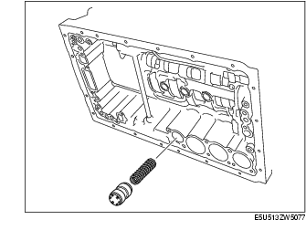
Caution
• Do not to damage the O-ring and accumulator piston.
-
Coat the new O-rings with ATF, and install it to the accumulator piston (C-3).
-
Install the accumulator piston (C-3) and the compression spring to the transmission case.{: #wp1058661}
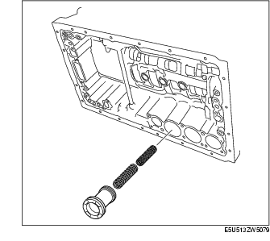
-
Coat the new O-rings with ATF, and install it to the accumulator pistons (C-2, B-3).
-
Install the compression springs and the snap rings to the accumulator pistons (C-2, B-3) using a flathead screwdriver.
-
Install the accumulator pistons (C-2, B-3) and the compression springs to the transmission case.{: #wp1058714}
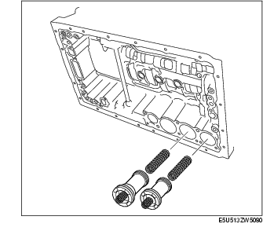
- Coat the new transmission gaskets and the new brake drum gaskets with ATF, and install it to the transmission case.{: #wp1058743}
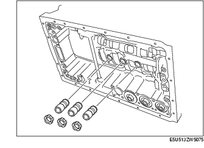
Caution
• Do not to damage the gasket.
- Install the check valve sub-component and the compression spring to the transmission case.{: #wp1058798}
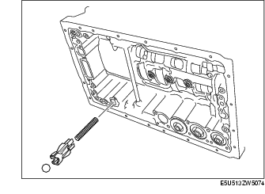
- Connect the manual valve link and install the control valve body component.{: #wp1058826}
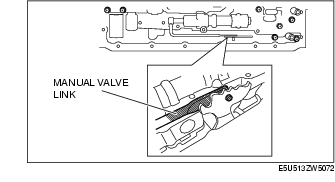
Caution
• When installing, be sure to put the wiring harness in the concave portion of the separator plate in the control valve body component as shown in the figure.
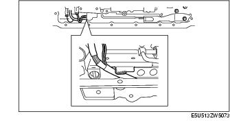
- Temporarily install the control valve body component with the bolts.{: #wp1058898}
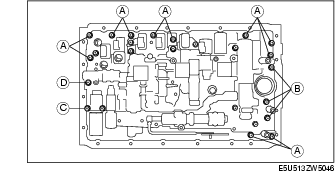
Bolt length (measured from below the head)
A: 25 mm {0.984 in} {: #wp1058939}B: 36mm {1.42 in} {: #wp1058952}C: 45mm {1.77 in} {: #wp1058965}D: 50mm {1.97 in}
*Note*{: #wp1058991}
• Aligning the bolt holes, temporarily tighten the bolts by hand. {: #wp1060281}• Be sure to tighten the inner bolts first.
- Tighten the bolts.
Tightening torque
10.0-12.0 N·m {102-122 kgf·cm, 89-105 in·lbf}
- Install the detent spring cover and detent spring with the bolt to the control valve body component.
Tightening torque
8.0-12.0 N·m {82-122 kgf·cm, 72-105 in·lbf}
- Install the TFT sensor and the lock plate with the bolt to the control valve body component.
Tightening torque
8.0-12.0 N·m {82-122 kgf·cm, 72-105 in·lbf}
- Connect the coupler component to the clamps.{: #wp1059152}
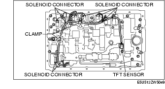
-
Connect the solenoid connectors to the solenoids.
-
Coat a new O-ring with ATF and install it to the oil strainer.
-
Install the oil strainer with the bolts to the control valve body component.{: #wp1059200}
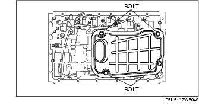
Tightening torque
8.0-12.0 N·m {82-122 kgf·cm, 72-105 in·lbf}
Caution
• Pay attention to the fabric so that foreign materials from it cannot comes out in the transmission.
- Clean the contact surface of oil pan and transmission case.
*Note*{: #wp1059298}
• Clean the oil cleaner magnets before install it.
- Install the magnets to the oil pan.{: #wp1059316}
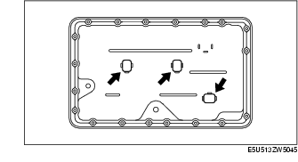
Caution
• Do not to damage the contact surface of the transmission case and the oil pan. {: #wp1060284}• Do not to deform the oil pan.
- Install a new oil pan gasket and the oil pan to the transmission case.
Caution
• Be careful that bolts might be damaged if tightened too much since the gasket is cork-made.
- Install the bolts to the transmission case.
Tightening torque
3.9-4.9 N·m {40-49 kgf·cm, 35-42 in·lbf}
-
Connect the negative battery cable. (See BATTERY REMOVAL/INSTALLATION [L8, LF].)
-
Install the battery cover.
-
Add ATF and, with the engine idling, inspect the ATF level and for leakage. (See AUTOMATIC TRANSMISSION FLUID (ATF) LEVEL ADJUSTMENT [SJ6A-EL].)
-
Perform the mechanical system test. (See MECHANICAL SYSTEM TEST [SJ6A-EL].)
-
Perform the road test. (See ROAD TEST [SJ6A-EL].)